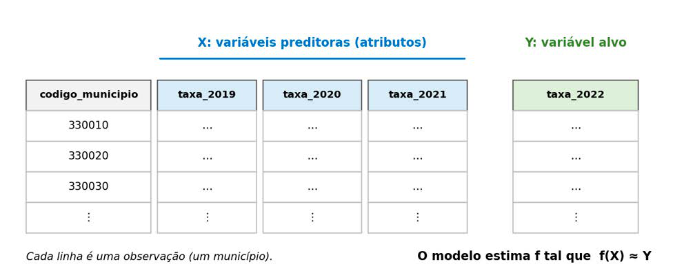

Módulo 3 | Aula 1
Introdução ao Machine Learning
Formalizando o problema: a função f: X → Y
No aprendizado supervisionado, o tipo mais comum de ML e aquele representado na Figura 1, o objetivo é encontrar uma função f capaz de mapear entradas em saídas:
f: X → Y- X (variáveis preditoras ou atributos): as informações de entrada, como características demográficas, clínicas, socioeconômicas, geográficas ou ambientais.
- Y (variável alvo ou desfecho): aquilo que se deseja prever, como a ocorrência de óbito, o diagnóstico ou o tempo de internação.
Essa notação conversa diretamente com o que você aprendeu no Pandas. Em uma tabela de dados, cada linha é uma observação (um paciente, uma internação, um município) e cada coluna é um atributo. X corresponde a um conjunto de colunas, um DataFrame, e Y corresponde a uma única coluna, uma Series. Lembra da diferença entre sim_2022[["idade_obito"]] e sim_2022["idade_obito"], discutida na aula 2 do módulo 2? Ela reaparece aqui: por convenção, X é um DataFrame e y é uma Series.
Figura 2 - A função f: X → Y representada sobre uma tabela de dados.

A Tabela 2 mostra como diferentes perguntas de Saúde Pública podem ser formuladas nesses termos. Repare que o mesmo sistema de informação pode dar origem a problemas bem diferentes, dependendo da escolha de X e de Y.
Tabela 2 – Perguntas de Saúde Pública formuladas como f: X → Y.
| Pergunta | X (preditoras) | Y (alvo) | Tarefa |
|---|---|---|---|
| Quanto tempo deve durar esta internação? (SIH) | Idade, sexo, diagnóstico principal (CID-10), procedimento, tipo de estabelecimento. | Dias de permanência. | Regressão. |
| Esta internação tem risco elevado de óbito? (SIH) | Idade, diagnóstico principal, procedimento, município de residência. | Óbito hospitalar (sim/não). | Classificação. |
| Qual taxa de mortalidade esperar no próximo ano? (SIM + IBGE) | Taxas dos anos anteriores, indicadores socioeconômicos. | Taxa por 100 mil habitantes. | Regressão. |
| Este recém-nascido tem risco de baixo peso? (SINASC) | Idade e escolaridade da mãe, número de consultas de pré-natal, tipo de gravidez. | Peso ao nascer abaixo de 2.500 g (sim/não). | Classificação. |
Fonte: Elaborada pelos autores (2026).
Duas condições práticas devem ser verificadas ao definir X e Y. Primeiro, Y precisa estar disponível nos dados de treinamento, ou seja, é preciso conhecer o desfecho dos exemplos passados. Segundo, as variáveis de X precisam estar disponíveis no momento em que a previsão será usada. Um modelo que usa, como preditora, uma informação registrada somente depois do desfecho pode parecer excelente no computador, mas é inútil na prática. Voltaremos a esse problema, chamado de vazamento de dados, mais adiante nesta aula.